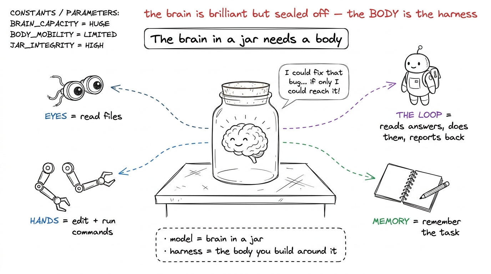
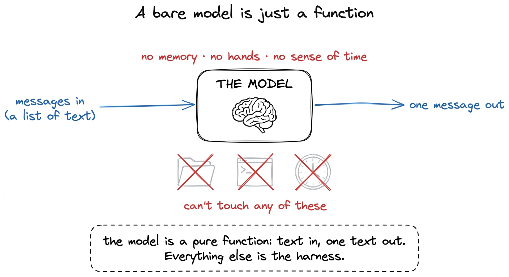
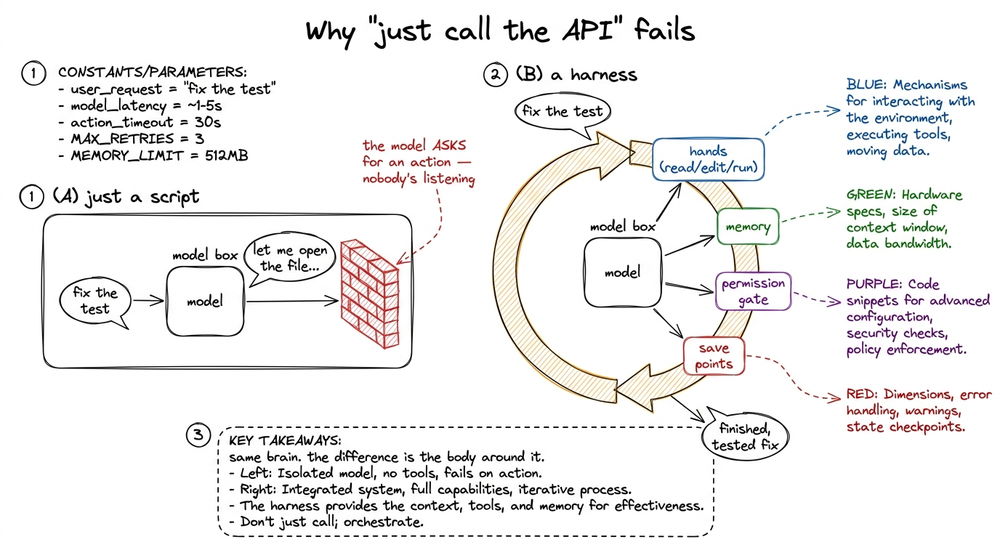
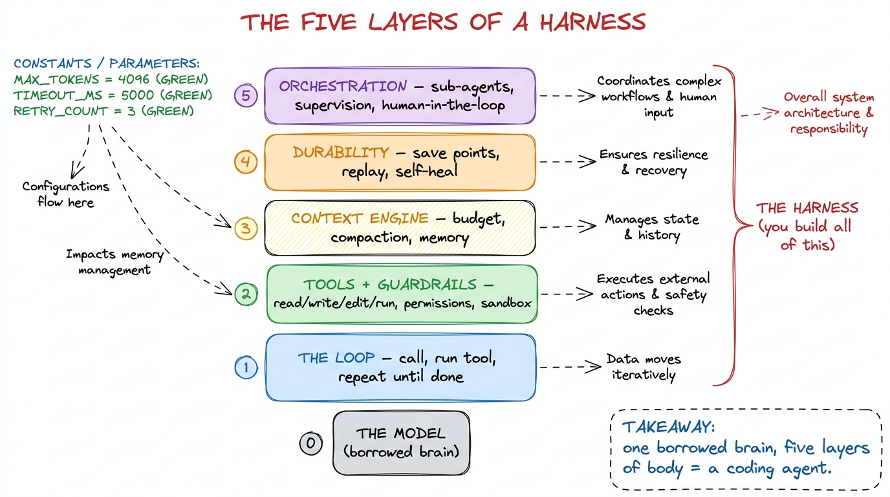
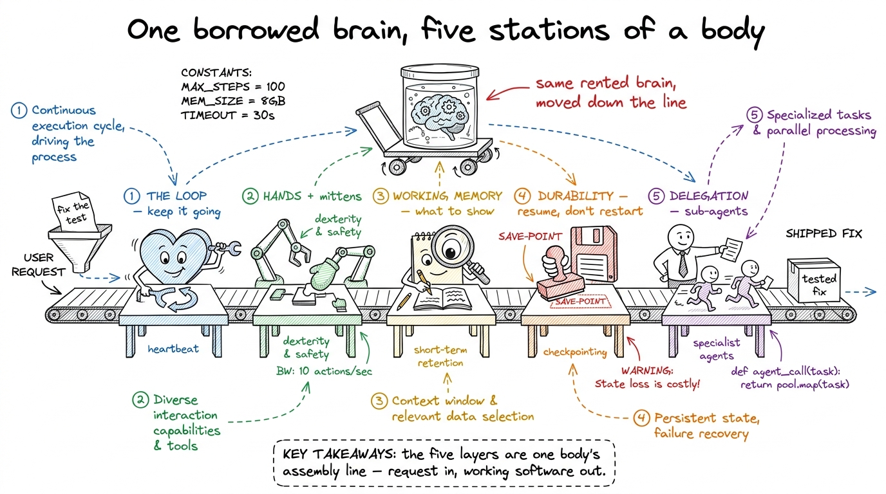

Why an agent needs a harness
By the end of this chapter you can stand at a whiteboard and answer, without hand-waving, the question the whole workshop rests on: if the model is so smart, why does it need all this machinery around it? You don't need to have built an agent before. You need one metaphor students never forget, one honest little demo that fails in front of their eyes, and the discipline to keep it simple. Let's build it.
The one-sentence answer
A large language model is a brain in a jar. It is astonishingly clever — it can reason, write code, plan, explain — but it is sealed off from the world. It has no eyes to read your files, no hands to run your tests, no memory of yesterday, and no sense that time is passing. The harness is the body you build around that brain: the eyes, the hands, the memory, the nervous system. Claude Code, Cursor, and pi are not models. They are bodies wrapped around a rented brain.

figure rendering · The core metaphor of the whole workshop: the model is a brilliant braiWhat a bare model actually gives you
Let's be precise about how sealed-off the brain really is, because students will overestimate it. Strip away all the tooling and a language model offers exactly one primitive: you hand it a list of messages, and it hands you back one more message. That's the whole thing. Text in, text out. It is a function.
And a function like this has three properties students find genuinely surprising when you say them plainly:
- It has no memory. Each call is a stranger who has never met you. If you want it to remember, you have to paste the history back in every single time.
- It has no hands. It cannot open a file, run a command, or touch the internet. It can only produce text.
- It has no sense of time. It doesn't know a call takes two seconds or that it happened after the last one. There is no "meanwhile."

figure rendering · A bare model is a stateless function — text in, one text out. It cannoThis is wonderful and useless at once. Wonderful, because that one primitive holds astonishing capability. Useless, because you wanted something that reads your codebase, edits three files, runs the tests, notices they failed, and fixes the bug — remembering the whole time what you asked. None of that is in the function. All of it has to be built around it.
Why "just call the API" fails — watch it break
Here is the demo that does more teaching than any slide. Every student's first instinct is: "I'll just write a little script — read the request, call the model, print the answer. How hard can it be?" Let them believe it for exactly one example, then break it.
The script works beautifully for "explain this regex." One question, one answer, done. Then you ask it to "fix the failing test," and it falls apart in front of you — not because the model is dumb, but because the script has no body.
explain this regex: ^\d{3}-\d{4}$. The one-shot script nails it — the room relaxes, "see, easy." Second prompt: fix the failing test in this repo. The model replies with something like "Sure — let me open the test file to see what's failing." And your script just... prints that sentence. It can't open the file. The model asked for an action and nobody was listening. Let the silence sit. That dead end is the entire motivation for the workshop.Watch everything the model wants that the script can't give:
- It says "let me look at the test file" — but a model can't read files. You have to give it a tool and run it.
- It reads the file and proposes an edit — but a model can't write files either. You run that, and you'd better ask before overwriting the user's code.
- It wants to run the tests — that's a shell command, which could be
rm -rfin disguise. You need a permission gate and a sandbox. - The conversation gets long — you have to decide what stays in the model's limited context.
- Halfway through, the process crashes — and you need to have been saving progress, or all that work is gone.
Every one of those "you needs" is a piece of the harness. The bare model gave a single transaction: one question, one answer, no continuity. An agent is a loop of many transactions, held together by machinery that remembers, acts, protects, and recovers.

figure rendering · The leap from a one-shot script to an agent: same model, but wrapped iThe body has five parts — the map to keep on the wall
So what is this body made of? Across the five days of the workshop you build the harness in five layers, each giving the brain a power it lacked in the jar. Give students the whole map on day one so every later day has a home.

figure rendering · The five layers of the body, bottom to top: the loop, tools + guardraiWalk it once, top to bottom, in body-metaphor language so it sticks:
- The loop is the heartbeat — the helper who reads the brain's answer, does what it asked, and reports back, over and over until the job's done. (Day 1.)
- Tools + guardrails are the hands — and the mittens that stop the hands from grabbing something hot. (Day 2.)
- The context engine is working memory — deciding what the brain gets to see this turn, because its short-term memory is tiny and precious. (Day 3.)
- Durability is the save point — so a crash means "resume," not "start over." (Day 4.)
- Orchestration is delegation — one brain can hire other brains for sub-jobs when a task is too big for one head. (Day 5.)

figure rendering · The five layers drawn as a friendly assembly line: the same borrowed bThis is exactly what runs in production today
Frame the stakes so students know this isn't a toy exercise. Claude Code is not a model — it's a harness Anthropic wraps around Claude. Cursor is not a model — it's a harness around whichever model you pick. pi (the small open coding agent) is not a model either; it's a strikingly small harness, which is the best possible proof that you don't need a giant company to build one — you need to understand the five layers.
1 This is why pi is such an instructive object to keep pointing at. It proves a real, capable harness can be small and readable end-to-end. You are not building a mystery; you are building something you can hold in your head — which is the entire promise of this workshop.
The confusion to head off early
One more line to keep in your pocket, because someone always confuses these three words: prompt engineering is what you say to the brain (one good instruction). Context engineering is what the brain sees each turn (which memories and files you spend its tiny attention on). Harness engineering is what the brain lives inside — the whole body. Prompt is a sentence. Context is a turn. The harness is the machine. This workshop is about the machine.
That's the chapter. One jar, one broken script, and a five-part body. If a student leaves able to explain why a brilliant model still can't do anything on its own and why the harness — not the model — is the engineering, you have given them the mental spine for everything the next five days will build.
You can now teach
- The brain-in-a-jar metaphor: the model is brilliant but sealed off, and the harness is the body — eyes, hands, memory, and a helper — you build around it.
- What a bare model actually is — a stateless function, text in and one text out, with no memory, no hands, and no sense of time — demonstrated with the "what's my name?" forgetting demo.
- Why "just call the API" fails, shown live: the one-shot script that nails "explain this regex" and then dead-ends the instant the model asks to act.
- The five layers of the harness as body parts — heartbeat, hands, working memory, save points, delegation — and which workshop day builds each.
- The production link: Claude Code, Cursor, and pi are harnesses, not models; identical brain, different body — and the harness is the part that's yours.
- The fix for the big confusion: a smarter model is still a brain in a jar, so the harness doesn't disappear as models improve — it grows more valuable.